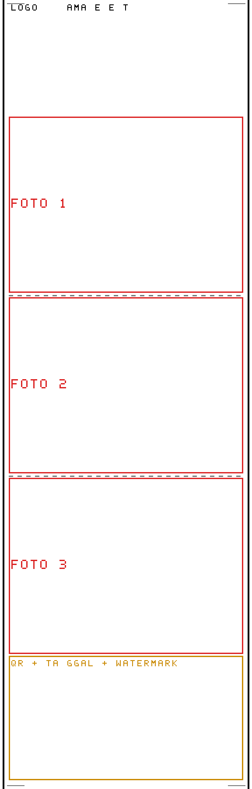
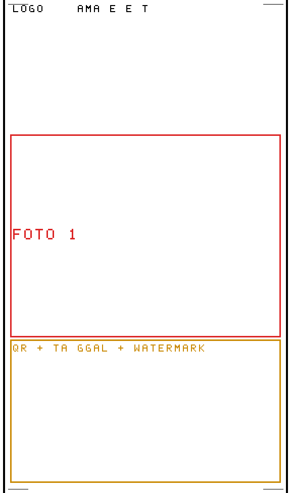
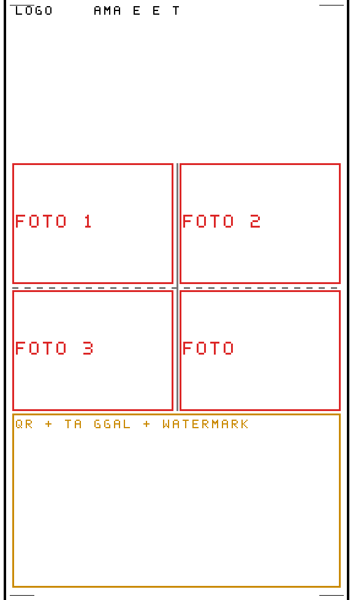
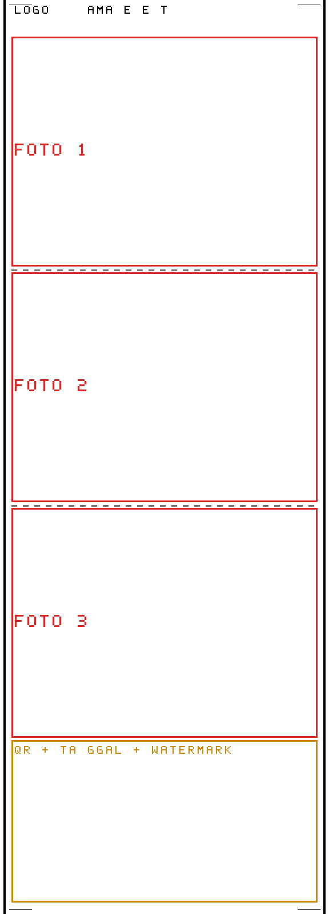
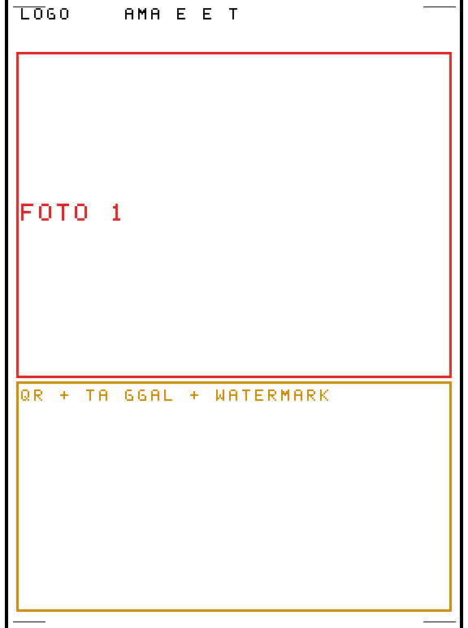
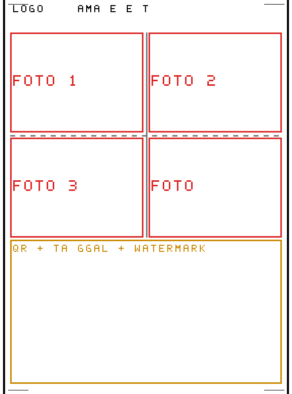

Panduan Desain Bingkai Custom (Canva)
Bingkai custom di-upload sebagai 1 file PNG transparan, lalu di-STRETCH menutup SELURUH strip hasil (foto + logo + QR + tanggal + watermark) dan digambar paling atas.
Aturan wajib
- Latar = transparan (PNG dengan background transparan di Canva, atau export PNG lalu pastikan bg kosong).
- Tengah HARUS transparan → supaya foto kelihatan.
- Bagian bawah (zona QR/tanggal/watermark ~200px) biarkan transparan → kalau diisi, QR & teks ketutup.
- Hanya tepi kiri/kanan + pojok yang boleh berwarna (tahan distorsi stretch).
Ukuran canvas (lebar SELALU 576px)
Tinggi bergantung template + toggle yang nyala. (Hitungan: header logo=266 / tanpa logo=64; footer all-on=308, tanpa QR=100.)
| Template | Logo NYALA | Tanpa Logo |
|---|
| 3 Vertikal | 576 × 1800 | 576 × 1598 |
| 1 Foto | 576 × 976 | 576 × 774 |
| 2x2 | 576 × 978 | 576 × 776 |
Tinggi berubah kalau toggle QR / tanggal / watermark dimatikan. Kalau ragu, desain di angka "all-on" (paling tinggi) lalu biarkan zona bawah transparan.
Board panduan siap import (file PNG transparan, di /guides/)
Gambar di dalam board (sudah berlabel, siap dicentang di Canva):
- Box MERAH + tulisan “FOTO 1 / 2 / 3” = slot foto persis & urutannya (atas→bawah). Tiap slot proporsi 4:3 (lebar 536px, tinggi 402px di canvas 576).
- Garis putus-putus ABU-ABU = jarak antar foto (gap 10px di canvas). Jangan isi area ini.
- Tulisan “LOGO / NAMA EVENT” (atas) = zona merah logo.
- Box KUNING “QR + TANGGAL + WATERMARK” (bawah) = jangan diisi.
- Tepi hitam + tanda pojok = suggested dekorasi.
Import ke Canva sebagai lapisan bawah, lalu desain di atasnya (cuma tepi/pojok).
Logo NYALA:



Tanpa Logo:



Cara di Canva
- Buat desain ukuran custom: 576 × (tinggi di atas).
- Background: biarkan kosong (transparan).
- Gambar dekorasi cuma di tepi kiri & kanan (full tinggi) + pojok.
- JANGAN isi tengah & jangan isi strip bawah ~200px.
- Export → PNG (atur transparan).
- Di app: Pengaturan (⚙) → Gallery Bingkai Custom → + Upload Bingkai.
- Di layar hasil, klik thumbnail bingkai → preview & cetak auto-update.
Catatan penting soal stretch
Satu bingkai di-stretch ke ukuran canvas aktif. Bingkai yang lo buat untuk 3 Vertikal (tinggi 1800) kalau dipakai di 1 Foto (976) akan melar vertikal. Solusi:
- Buat 1 bingkai per template (ukuran masing-masing di tabel), atau
- Desain tepi + pojok saja (tanpa bentuk di tengah) → melar tidak merusak.
{kind=link}
{kind=link}
{kind=link}
{kind=link}
{kind=link}
{kind=link}